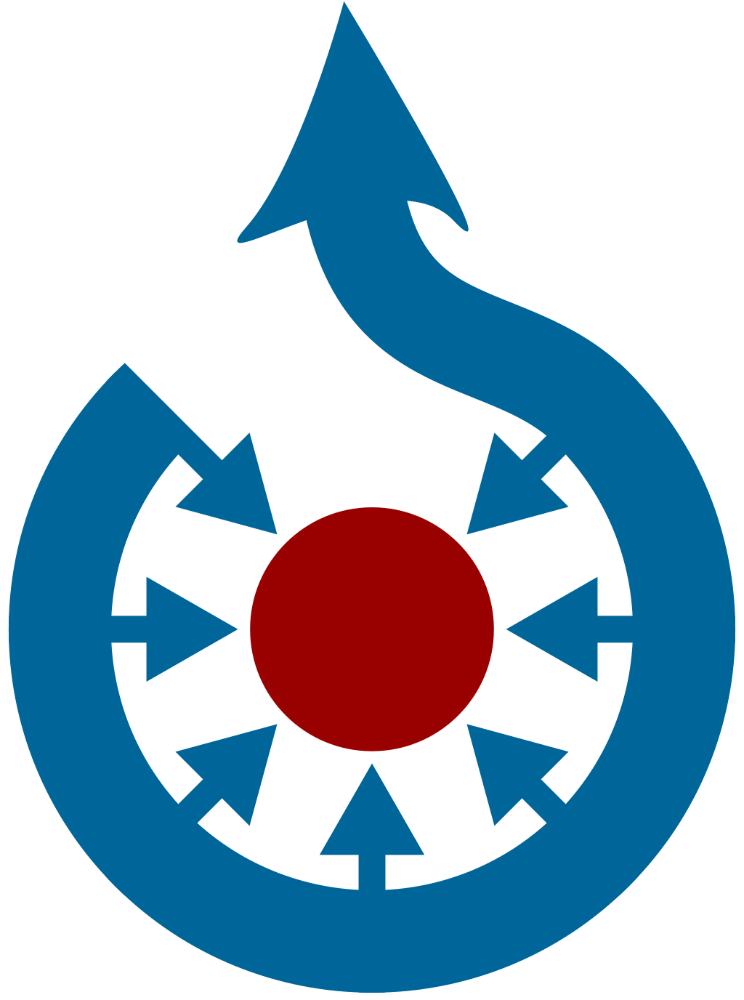
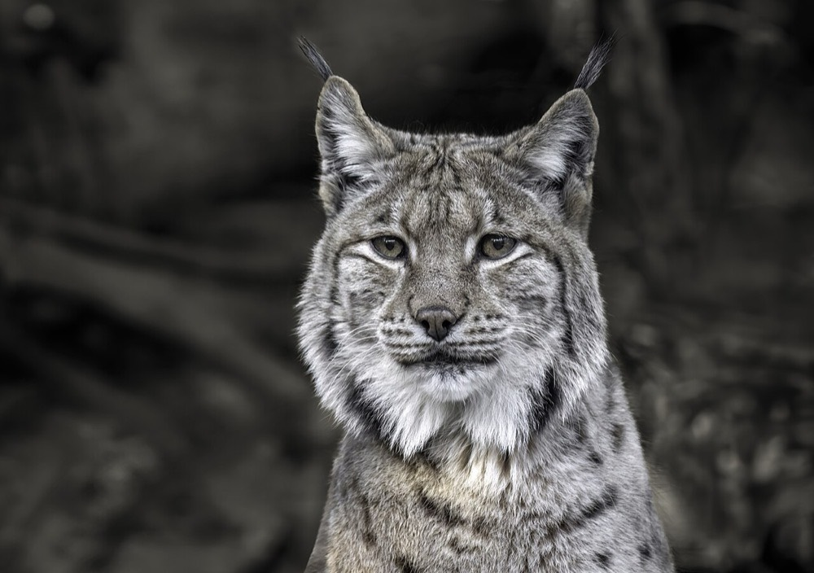
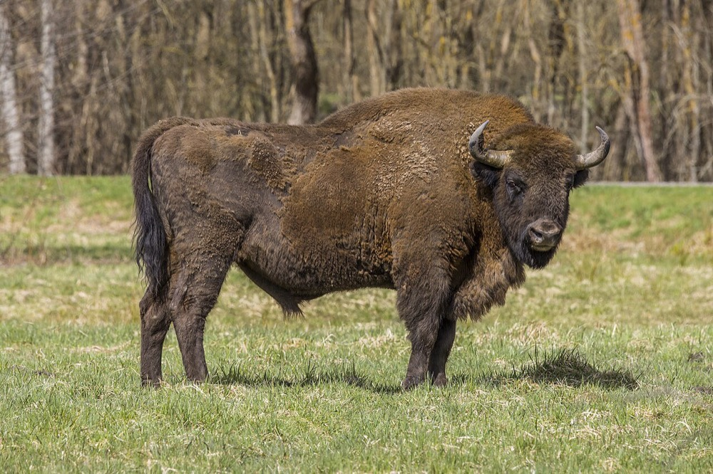
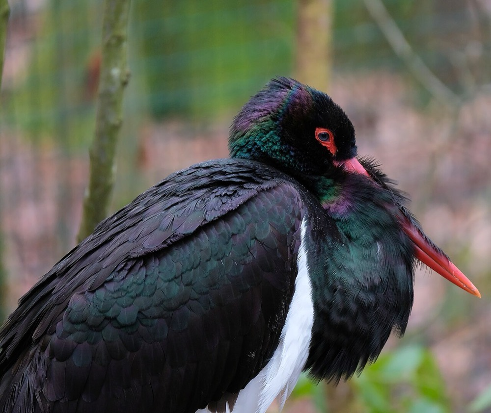
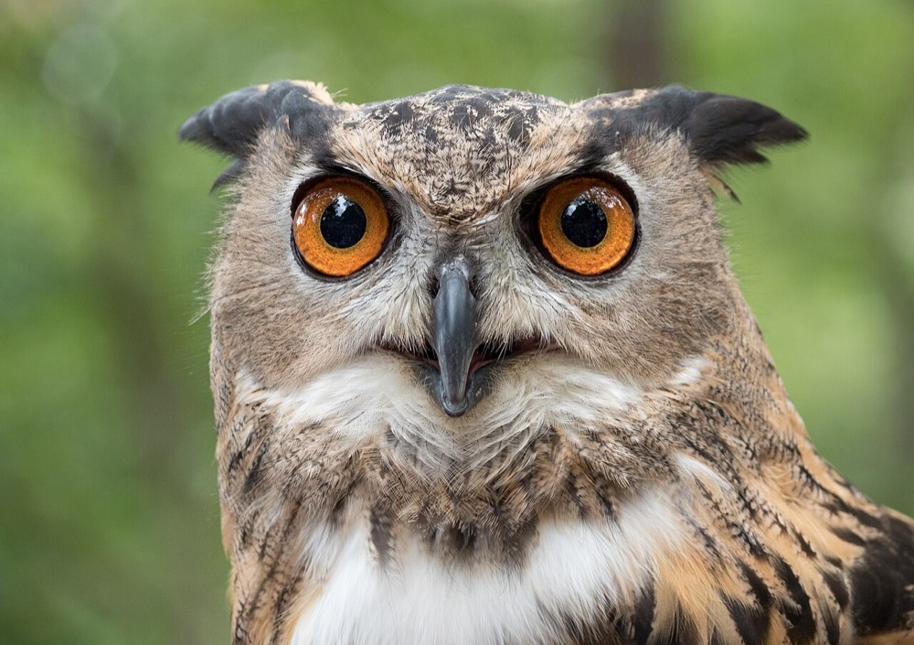
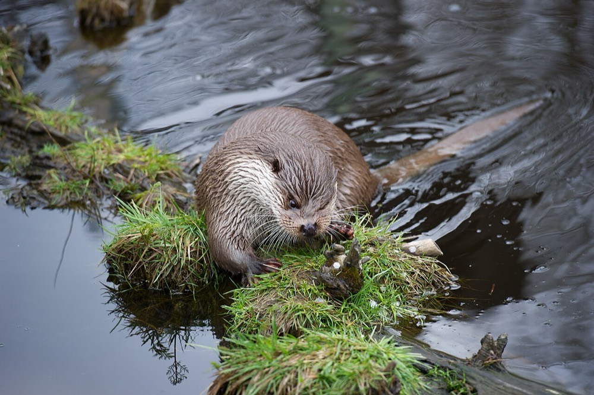
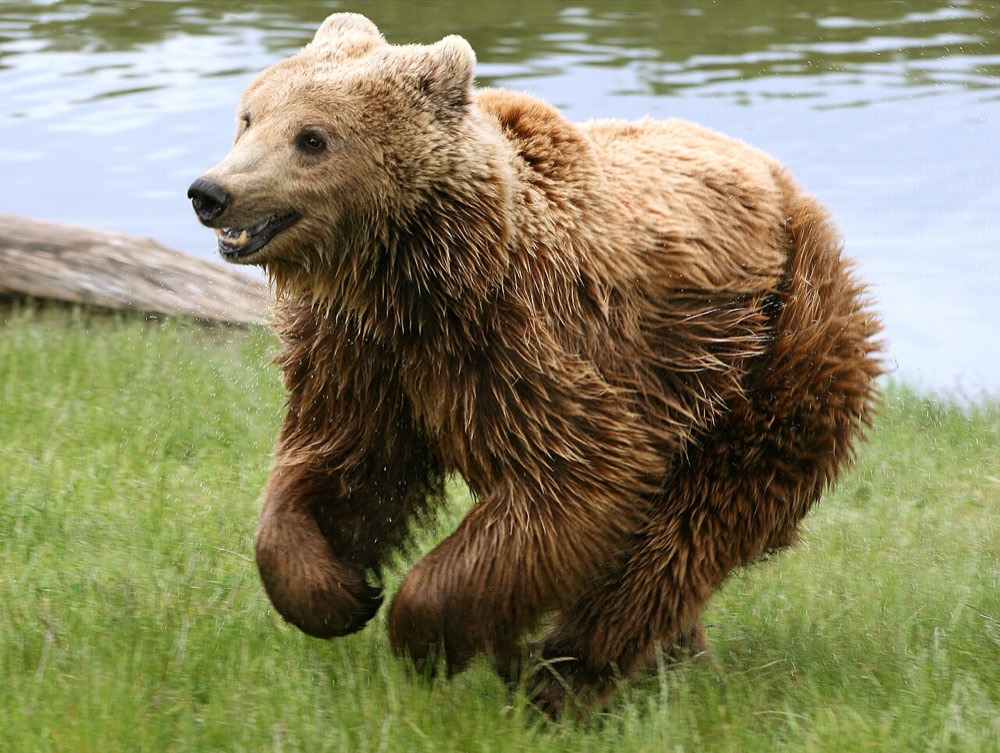
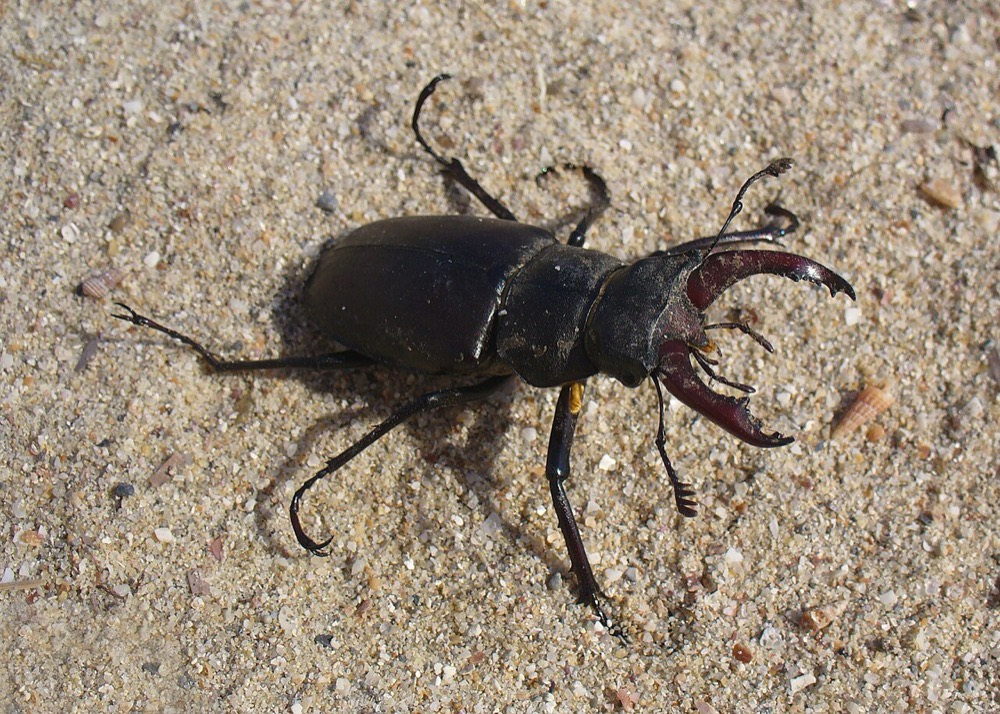
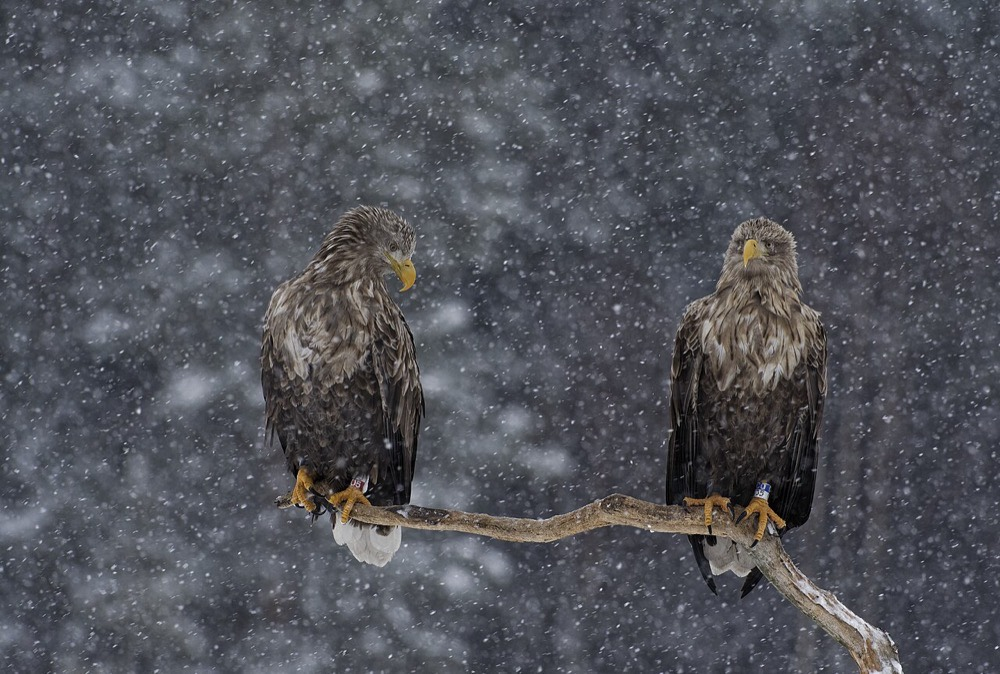

Практична робота · 7 клас · Ліцензії на використання
🐾 Плакат «Червона книга України»
Збери плакат про рідкісних тварин лише з тих фото, які автори дозволили брати, правильно підпиши їх і обери ліцензію для свого плаката.
⏱ 30–35 хв Google Презентації
Google Презентації
Google Презентації
Фото з ВікісховищаЩо має вийти
Покроково
1
Створи презентацію
🎓 Через Google Classroom
- Відкрий завдання → .
- У блоці «Ваша робота»: .
📁 Через Google Диск
- .
- Назви файл: Червона книга — Прізвище.
- Залиш один слайд, макет .
- Заголовок: Червона книга України.
2
Обери трьох тварин
Усі вони — з Червоної книги України. Фото взято з Вікісховища: під кожним уже записано назву, автора, джерело й ліцензію.

- Назва
- Portrait of a Carpathian Lynx
- Автор
- Wilfredor
- Джерело
- Вікісховище
- Ліцензія
- CC0


- Назва
- European bison (Bison bonasus) male Białowieza
- Автор
- Charles J. Sharp
- Джерело
- Вікісховище
- Ліцензія
- CC BY-SA 4.0


- Назва
- Cigogne noire DSCF0227
- Автор
- Musicaline
- Джерело
- Вікісховище
- Ліцензія
- CC BY-SA 4.0


- Назва
- Eurasian eagle-owl (44088)
- Автор
- Rhododendrites
- Джерело
- Вікісховище
- Ліцензія
- CC BY-SA 4.0


- Назва
- European otter 01
- Автор
- Alexander Leisser
- Джерело
- Вікісховище
- Ліцензія
- CC BY-SA 4.0


- Назва
- Brown bear (Ursus arctos arctos) running
- Автор
- Malene Thyssen
- Джерело
- Вікісховище
- Ліцензія
- CC BY 2.5


- Назва
- Lucanus cervus male 2008 G1
- Автор
- George Chernilevsky
- Джерело
- Вікісховище
- Ліцензія
- Суспільне надбання


- Назва
- White-tailed eagle LGphoto
- Автор
- LG Nyqvist
- Джерело
- Вікісховище
- Ліцензія
- CC BY-SA 4.0

Автори дозволили брати ці фото. Підписуй кожне — навіть CC0 й суспільне надбання, це гарний тон.
3
Встав фото на слайд
- Під фото натисни .
- Клацни на слайді й натисни Ctrl+V.
- Так само встав ще два фото.
- Розстав їх у ряд однакового розміру.
Не копіюється? Натисни , а в презентації — .
Розмір змінюй за кутовий маркер — так фото не розтягнеться.
4
Підпиши кожне фото
- Під фото: .
- Перший рядок — назва тварини жирним.
- Другий — підпис за формулою, шрифт 10–11:
«Назва»—Автор,Джерело,Ліцензія
Зубр
«European bison (Bison bonasus) male Białowieza» — Charles J. Sharp, Вікісховище, CC BY-SA 4.0
«European bison (Bison bonasus) male Białowieza» — Charles J. Sharp, Вікісховище, CC BY-SA 4.0
Усе потрібне для підпису — під фото в галереї. Переписуй точно, як там.
5
Обери ліцензію для свого плаката
Плакат — теж інформаційний продукт, і його автор — ти. Склади ліцензію, як у конструкторі з уроку:
Є фото з BY-SA?Тоді й плакат — CC BY-SA 4.0: умови мають бути ті самі.
Решта — CC BY, CC0 чи суспільне надбання?Обирай будь-яку ліцензію CC — як у конструкторі з уроку.
- Увімкни потрібні умови — значок складеться сам.
- Натисни і встав його внизу слайда (Ctrl+V).
- Поруч — текстове поле: Плакат: Ім'я Прізвище, 7 клас · ліцензія CC …
Перевір себе: на плакаті є рядок з твоїм іменем і ліцензією.